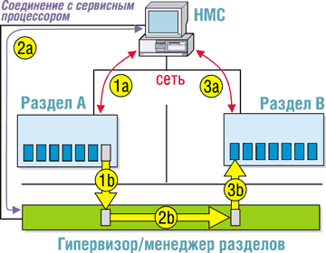

Алексей Борзенко,
к. т. н., доцент Рязанской радиотехнической академии
Как известно, логические разделы (Logical Partitioning, LPAR) - это функция системы, обеспечивающая дополнительную гибкость за счет одновременного выполнения на одном сервере нескольких образов операционной системы. Корпорация IBM (http://www.ibm.com) существенно расширила LPAR, разработав так называемые динамические LPAR (DLPAR), позволяющие перемещать ресурсы между разделами без перезагрузки системы или самих разделов.
Логические разделы на серверах IBM eServer pSeries основаны на аппаратных возможностях микропроцессоров PowerPC. Это же семейство микропроцессоров служит основой серии IBM eServer iSeries, в которой логические разделы используются с 1999 г. Специалисты, знакомые с механизмом логических разделов на IBM eServer zSeries и S/390, заметят его сильное сходство с давно реализованными в этих машинах функциями LPAR и динамических разделов. Функции динамических LPAR в pSeries основаны на большом опыте разработок в этой области для систем zSeries, хотя по своим возможностям пока уступают аналогичным функциям в zSeries.
Чтобы полностью задействовать возможности LPAR, требуются:
- система pSeries с процессором POWER4 (например, p690, p670, p630 или более поздняя модель);
- обновление микрокода системы (не позже октября 2002 г.);
- консоль управления (Hardware Management Console, HMC) версии R3V1.0 или более поздней;
- ОС AIX 5L версии 5.2 или более поздней.
Для реализации динамических LPAR необязательно переводить все разделы системы на AIX версии 5.2 или более поздней, однако в тех разделах, где будет реализована эта функция, это необходимо. Новая версия микрокода системы и HMC будут поддерживать AIX 5.1 с текущим уровнем функциональности LPAR.
Ресурсы динамических LPAR
В LPAR для каждого раздела необходимо выделить отдельный процессор, область памяти 256 Мбайт и слот для адаптера ввода-вывода. Одно из основных преимуществ LPAR состоит в более точном контроле за распределением ресурсов между разделами, который позволяет получить раздел с практически любой конфигурацией.
Динамические LPAR расширяют эти возможности и позволяют точно перераспределять ресурсы не только при активизации разделов, но и во время их работы. Отдельные процессоры, области памяти и слоты адаптеров ввода-вывода можно выводить в так называемый свободный пул и выделять из него ресурсы разделам либо переносить эти ресурсы непосредственно между разделами в любом количестве и комбинациях.
Ресурсы, перераспределенные с помощью DLPAR, имеют тот же набор характеристик, что и ресурсы, выделенные разделам при загрузке. Например, перемещенный в раздел процессор получает доступ ко всей памяти раздела, адресному пространству и прерываниям ввода-вывода. Он также может выполнять все задания, относящиеся к этому разделу.
Пользователи опции affinity partition configuration, которая выделяет процессоры и память в фиксированных конфигурациях на основе границ мультипроцессорных модулей MCM, могут динамически реконфигурировать только ресурсы ввода-вывода.
Динамическое и автоматическое перераспределение ресурсов
Хотя первая версия динамических LPAR обеспечивает все возможности перемещения ресурсов между работающими разделами, такие перемещения не могут быть спонтанными и неожиданными. Перемещения ресурсов LPAR полностью динамичны (без нарушения работы разделов), но это не означает, что они выполняются только автоматически (по внутренним правилам или при наступлении определенных событий). Вообще говоря, автоматизацию DLPAR можно реализовать на основе скриптов. Эта возможность позволяет в будущем расширить автоматизацию и управление нагрузками.
Стоит отметить, что динамические LPAR обеспечивают большую гибкость в условиях изменяющихся нагрузок и при развертывании серверов. Вот некоторые очевидные примеры:
- временное перемещение процессоров из раздела для тестирования в продукционный раздел в период пиковых нагрузок;
- перемещение памяти в раздел, где слишком часто происходит подкачка страниц с диска;
- перемещение между разделами редко используемых устройств ввода-вывода, например, CD-ROM для установки ПО или ленточного привода для резервного копирования;
- объединение набора процессоров, памяти и ресурсов ввода-вывода в свободный пул и создание из них нового раздела;
- выделение нескольких LPAR в минимальной конфигурации на одной машине в логический резервный сервер для основных серверов или в горячий резерв;
- выделение свободных ресурсов при сбое основного сервера резервному LPAR, чтобы он смог взять на себя нагрузку.
Как видно из этих примеров, применение DLPAR открывает новые возможности повышения эффективности операций и увеличения отдачи от инвестиций в серверное оборудование.
Управление динамическими LPAR
Для операций с динамическими LPAR в pSeries нужны три основных компонента. Системный микрокод, включая LPAR Hypervisor, обеспечивает добавление или изъятие ресурсов работающего раздела. AIX 5L Version 5.2 предоставляет команды и сервисы ядра, позволяющие динамически занимать и освобождать ресурсы AIX. И наконец, IBM Hardware Management Console (HMC) для pSeries обеспечивает управление перемещением ресурсов с помощью графического интерфейса пользователя или командной строки. Комбинация этих трех компонентов обеспечивает гибкое интегрированное управление перемещением ресурсов DLPAR.
Для перемещения ресурсов LPAR из одного раздела в другой нужно последовательно выполнить три операции, показанные на рисунке.
- HMC посылает сетевой запрос к AIX в разделе A на освобождение ресурса и перевода его в пассивное состояние (quiesced state). Ресурс останавливается и переходит под контроль гипервизора.
- HMC посылает на гипервизор команду передать ресурс из раздела A в раздел B.
- HMC посылает сетевой запрос к AIX в разделе B на принятие ресурсов от гипервизора и конфигурирование его для использования.
|  | Перемещение ресурсов между разделами.
|
Эти запросы можно инициировать с помощью графического интерфейса пользователя HMC, который вызывается из клиента WebSM (локально или удаленно) либо из командной строки HMC. Функции командной строки можно запускать из любой другой ОС в сети (при условии соответствующей авторизации), подключаясь к HMC командой rexec или с помощью клиента OpenSSH. Например, команды DLPAR могут инициироваться скриптом, выполняющимся в одном из разделов, или из приложения централизованного системного администрирования.
Кроме перемещения ресурсов напрямую между разделами, HMC позволяет удалять ресурсы из раздела и помещать их в свободный пул или брать ресурсы из свободного пула и добавлять в раздел. Для такой автоматизации операций DLPAR требуется сетевое соединение между HMC и разделами. Операции DLPAR можно проводить и без сетевого соединения, но для этого потребуется выполнить три шага независимо и вручную. Поскольку HMC использует то же самое сетевое соединение для сбора сообщений о сбоях оборудования и учетных данных из приложения Service Focal Point, настоятельно рекомендуется все же обеспечить это соединение.
Динамические LPAR и безопасность
Возможность перемещения ресурсов между разделами не означает ослабления основной безопасности среды LPAR. ОС раздела просто "не видит" другие разделы или ресурсы за пределами своего раздела, в том числе и те, которые находятся в свободном пуле. Она "видит" только набор так называемых коннекторов (connectors) для виртуальных ресурсов, в которых можно конфигурировать процессоры, память и ресурсы ввода-вывода. После того, как HMC добавляет ресурс в раздел, она посылает сообщение его ОС с запросом изменить один или несколько виртуальных коннекторов. Если ОС попытается сделать это до того, как HMC и гипервизор добавили ресурсы в ее раздел, она просто получит сообщение об ошибке выполнения операции, указывающей, что ресурсы отсутствуют.
Когда ресурсы перемещаются между разделами, гипервизор заново инициализирует устройство, и на нем не остается никаких данных от прежнего раздела. Например, когда область памяти передается между разделами, она инициализируется заново и заполняется нулями.
Сетевое соединение HMC с разделами использует механизмы защищенной передачи данных на основе технологии IBM Reliable Scalable Cluster Technology (RSCT), поэтому только HMC может выдать запрос DLPAR. Каждому пользователю HMC присваивается конкретная роль, которая и определяет, разрешено ли ему выполнять такие действия.
Динамические LPAR и "мощность по требованию"
Динамические LPAR также поддерживают схему приобретения "мощность по требованию" (Capacity Upgrade on Demand, CUoD). Используя ключ лицензирования CUoD, можно обеспечить наращивание мощности оборудования по требованию путем активации ресурсов, которые установлены физически, но пребывают в спящем режиме. Например, если система модернизируется путем ввода ключа лицензирования для дополнительных процессоров, то эти процессоры без прерывания работы системы активизируются и становятся свободными. Операции DLPAR затем могут использоваться для динамического и избирательного добавления вновь доступных процессорных ресурсов в нужные разделы.
Динамические LPAR также работают вместе с CUoD, обеспечивая динамическое резервирование процессоров. При таком резервировании нелицензированный процессор автоматически активизируется и передается разделу, в котором один из процессоров находится в состоянии ожидаемого сбоя (predictive failure). Состояние ожидаемого сбоя означает, что система отмечает тенденцию увеличения мягких ошибок, которые удается исправить или повторить команду, и поэтому заранее запрашивает AIX о выводе этого процессора из работы, поскольку для него превышено пороговое значение числа ошибок. Если динамическое резервирование возможно, то AIX автоматически включит новый запасной процессор и затем выведет из работы тот процессор, у которого зафиксировано состояние ожидаемого сбоя. В AIX 5.2 динамическое резервирование поддерживается даже для разделов внутри одного процессора.
Поддержка операционной системы
AIX 5L Version 5.2 допускает динамическое реконфигурирование процессоров, памяти и PCI-слотов ввода-вывода в горячем режиме благодаря тому, что в ней поддержка DLPAR реализована без изменений в модели программирования приложений и расширений ядра. Для работы в разделах DLPAR большинство программ не требуют модификации.
Риски, связанные с динамическим добавлением и удалением памяти, устранены путем изменения в ядре AIX, которое работает практически в виртуальном режиме. В результате система изолирована от влияния перемещения физической памяти, поскольку приложения, расширения ядра и основная часть самого ядра используют только виртуальную память.
Уже несколько лет AIX поддерживает динамическое удаление процессоров, находящихся в состоянии ожидаемого сбоя (Dynamic Processor Deallocation), поэтому на самом деле DLPAR не вносит ничего нового в эту функцию. Добавление же процессора - это новая функция, но поскольку большинство приложений сами "не знают", сколько процессоров находятся в онлайновом режиме, то связанный с ней риск минимален. Приложения, для которых имеет значение число процессоров в онлайновом режиме, обычно используют эту информацию для определения числа потоков (threads) при создании или сегментации заданий, но добавление еще одного процессора не влияет на их работу.
Динамическое реконфигурирование PCI-слотов ввода-вывода также нельзя назвать совершенно новой функцией - оно представляет собой просто расширение реализованной в AIX поддержки горячей замены карт PCI. Это хорошо видно из последовательности операций при выполнении данной функции. Сначала администратор регистрируется в разделе и с помощью стандартной процедуры AIX для PCI hot-plug проверяет, все ли нужные слоты свободны. Затем с помощью процедуры DLPAR на консоли HMC он перемещает слот в нужный раздел. В конце администратор регистрируется в нужном разделе и снова с помощью процедуры AIX для PCI hot-plug конфигурирует нужные адаптеры и устройства. Такой механизм гарантирует отсутствие конфликтов из-за доступа к тому слоту, который перемещается между разделами.
Стоит отметить, что ОС AIX 5L Version 5.2 обеспечивает двоичную совместимость с предыдущими версиями AIX 5L, а также с большинством старых 32-разрядных приложений. Двоичные коды, разработанные для ранних версий AIX 5L, смогут работать на AIX 5.2 без всяких изменений, поэтому DLPAR не повлияет на работу приложений или расширений ядра; однако поставщикам ПО рекомендуется протестировать свои приложения на AIX 5.2 при использовании DLPAR.
Использование DLPAR
DLPAR не влияет на работу большинства приложений, но если добиться динамической настройки использования всех системных ресурсов всем программным стеком с учетом операций DLPAR, то можно получить определенное конкурентное преимущество. Для этого архитектура системы была расширена таким образом, чтобы приложения и промежуточное ПО могли также участвовать в событиях DLPAR и соответственно расширяться и взаимодействовать с базовой ОС при добавлении и изъятии ресурсов.
ОС AIX 5.2 обеспечивает два механизма оповещения приложений и промежуточного ПО о том, что запрос DLPAR выполняется. Разработчики могут использовать скрипты DLPAR или API-интерфейсы для динамического изменения размеров подсистем. Первый из указанных способов могут также использовать системные администраторы для определения своих собственных политик работы с DLPAR. Например, системному администратору может потребоваться приостановить приложение, если известно, что из-за него не удается выполнить запрос DLPAR, а предоставляемый приложением сервис не критичен для работы системы.
В качестве примеров ПО, которое благодаря поддержке DLPAR может использовать эту новую технологию, можно назвать базы данных корпоративного уровня, менеджеры нагрузок, инструменты контроля производительности и менеджеры лицензий.
Гибкое распределение памяти
Одной из ключевых целей реализации этой функции было значительное сокращение объема реальной памяти, необходимой для ОС. В версии AIX 5L Version 5.1 гипервизор должен был выделить начальный блок непрерывной физической памяти, который масштабировался до общего объема логической памяти, выделенной логическому разделу. В некоторых случаях это приводило к невозможности активизировать раздел, особенно крупный, из-за того, что ОС не хватало непрерывной памяти, хотя суммарный объем свободных ресурсов в системе был достаточен для раздела.
Из-за этой проблемы пользователю приходилось изменять размер раздела, выключать другие разделы и в некоторых случаях даже перезагружать систему. В AIX 5.2 эта проблема была устранена, так что свободные ресурсы можно брать из любого места в системе. Для активизации этой функции администратор должен выбрать новую опцию Small Real Mode Address Region при создании или редактировании профиля раздела на консоли HMC.
Реконфигурирование процессоров и памяти полностью интегрировано с AIX, поэтому в большинстве случаев для выполнения этой операции от администратора не требуется никаких действий. Реконфигурирование PCI-слотов ввода-вывода несколько сложнее - администратор должен зарегистрироваться в разделе и выполнить процедуру AIX для горячей замены PCI с помощью GUI-интерфейса SMIT.
Необходимость ручного вмешательства для PCI-слотов ввода-вывода связана с тем, что перемещение слота может потребовать реконфигурирования физических и логических устройств или приложений. Поэтому решение о выполнении этой операции лучше поручить системному администратору. Тем не менее тот факт, что в данном релизе автоматизация реконфигурирования PCI-слотов ввода-вывода несколько ограничена, нельзя считать серьезным недостатком, поскольку динамическое перераспределение ввода-вывода между разделами применяется редко - к критическим ресурсам, которые нужно обрабатывать автоматически, относятся только процессоры и память.
Влияние на производительность
Большинство операций DLPAR можно выполнить за пару минут, за исключением изъятия памяти, продолжительность которого зависит от заданного пользователем объема. Обычно изъятие 4 Гбайт памяти занимает 1-2 мин (в зависимости от состояния памяти в разделе).
Во время выполнения операций DLPAR производительность ОС может немного снизиться из-за того, что ресурсы идентифицируются и перераспределяются. Когда ресурс добавляется, он сразу же становится доступен для использования, как если бы ОС была загружена уже вместе с этим ресурсом. Обычно выигрыш в производительности, связанный с добавлением или изъятием ресурса, пропорционален изменению ресурсов. Особенно это справедливо для процессоров, изменение числа которых в общем случае не имеет таких вторичных программных эффектов, как изменение памяти (например, для сохранения содержимого изъятой памяти необходимо переписать его по новому адресу или скопировать в область на диске, выделенную для подкачки страниц).
Влияние изъятия памяти на производительность системы труднее поддается измерению, поскольку оно сильно зависит от выполняемых нагрузок. Например, при удалении памяти пулы буфера файловой системы сокращаются, из-за чего может потребоваться повторно считать с диска индексный дескриптор файла. Такие вторичные эффекты должны автоматически обрабатываться системой, как только будет заново получен работающий набор ресурсов. Однако, если у раздела окажется слишком мало памяти, это может привести к частой подкачке данных с диска. Поэтому важно точно определить, сколько ресурсов, особенно памяти, требуется разделу для нормальной работы.
Таким образом, хотя ОС построена так, что она способна идентифицировать ресурсы и настроить их использование, для оптимального решения требуется системный подход, охватывающий также промежуточное ПО и приложения. В то же время в большинстве случаев система хорошо масштабируется, даже если приложения и промежуточное ПО не поддерживают DLPAR (за счет того, что в базовой ОС уже реализована существенная поддержка DLPAR). В частности, файловая система AIX JFS2 File System и сетевые подсистемы были усовершенствованы для работы с DLPAR, поэтому ОС хорошо сбалансирована по отношению к физическим конфигурациям более низкого уровня.
Мониторинг операций DLPAR
Имеется несколько способов мониторинга операций DLPAR. По умолчанию AIX представляет информацию о текущих запросах DLPAR на панели оператора в виде кодовых комбинаций светодиодов и коротких текстовых сообщений, которые выводятся в окне отображения раздела пользовательского интерфейса HMC. Пользователь также может запросить более подробный отчет, задав уровень детализации в диалоговом окне HMC при запросе DLPAR. Этот отчет включает информацию о работе базовой ОС, которую можно дополнить информацией о конкретных приложениях и промежуточном ПО. Эта информация выдается пользователю на HMC. По умолчанию подробный отчет не выдается.
Детальные отчеты можно также получить с помощью команды AIX syslog, обладающей большей гибкостью. Если предпочтителен этот метод, то администратор должен сконфигурировать саму функцию syslog. По умолчанию этот отчет отключен.
В случае ошибки при выполнении операции DLPAR пользователь должен выяснить ее причину из файла регистрации ошибок error log AIX. Обычно error log используется для перехвата условий возникновения ошибок, вызванных расширениями ядра и приложениями, которые в большинстве случаев может исправить сам пользователь. Например, если процессор назначен для выполнения какого-то задания и, соответственно, его нельзя вывести из работы, то делается запись в error log entry с указанием процесса, который следует переконфигурировать.
***
Динамические LPAR в IBM eServer pSeries - надежное средство реализации гибкой и адаптивной стратегии консолидации серверов, позволяющее проводить ее без прерывания операций и обеспечивающее более высокий уровень поддержки для компаний, работающих в условиях острой конкуренции и решающих сложные проблемы бизнеса.